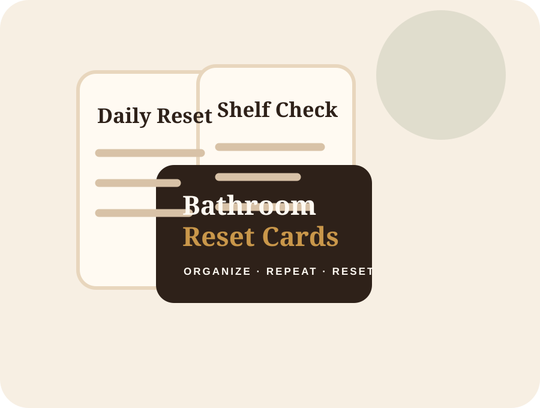
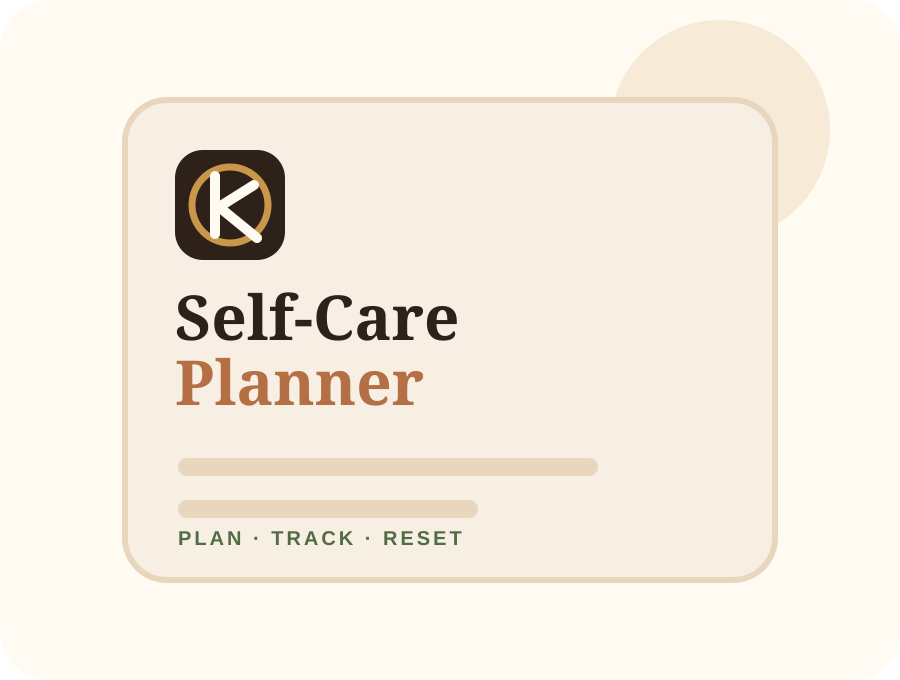

3-Minute Natural Self-Care Guide
Free starter guide for cleanse, polish, moisturize, scent, and reset.
Owned digital tools
These owned Kunta Naturals products help customers plan, track, and repeat their self-care routine before moving into physical product picks.
Digital ladder
Free starter guide for cleanse, polish, moisturize, scent, and reset.

Printable cards for home and family-safe bathroom routine organization.
A guided space for reflections, product clarity, and ritual tracking.

Plan rituals, track progress, and simplify shopping decisions.
The premium bundle for the complete Kunta Naturals digital method.